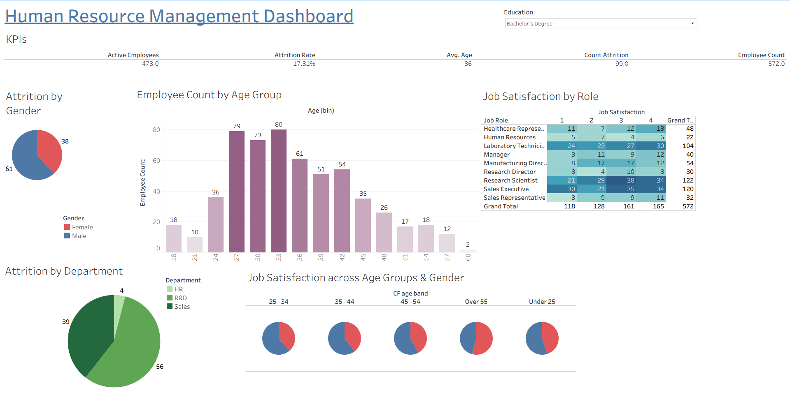

Human Resource Management Dashboard in Tableau
Project Goal
The aim of this Tableau project was to transform HR records into actionable insights. The dashboard provides a clear overview of employee demographics, attrition patterns, and job satisfaction, empowering HR leaders to make informed and proactive decisions.
Dashboard Highlights
- Headline KPIs – Active Employees (1,233), Attrition Rate (16.12%), Avg. Age (37), Total Employee Count (1,470), Attrition Count (237).
- Attrition Analysis – By gender (higher attrition in males) and by department (Sales at 133, R&D at 92, HR at 12).
- Employee Demographics – Most employees are between 28–35 years old, peaking at age 30.
- Job Satisfaction – Heatmap by role reveals higher satisfaction among Research Scientists, Technicians, and Sales Executives.
- Job Satisfaction Across Groups – Compared across age bands and gender for deeper workforce insights.
Key Insights
- Sales roles show high satisfaction but still face the highest attrition — suggesting workload or pressure as key drivers.
- Younger workforce (28–35) dominates, highlighting the importance of career development programs.
- Gender differences in attrition exist, but role and department seem to be stronger influencers.
Why It Matters
This dashboard enables HR managers to pinpoint problem areas, optimize retention strategies, and understand employee satisfaction beyond raw numbers. Instead of static reporting, Tableau provides an interactive lens into the workforce, helping leaders move from reactive to proactive planning.
Tools & Skills
- Tableau – Dashboard design, KPIs, pie charts, histograms, heatmaps.
- Data Analysis – Workforce attrition, demographic segmentation, job satisfaction analysis.
- Storytelling – Turning raw HR data into insights that inform decision-making.
Dashboard Preview
For employees with only a Bachelor's Degree as their education level:

← Back to Home
üîó Download Tableau File